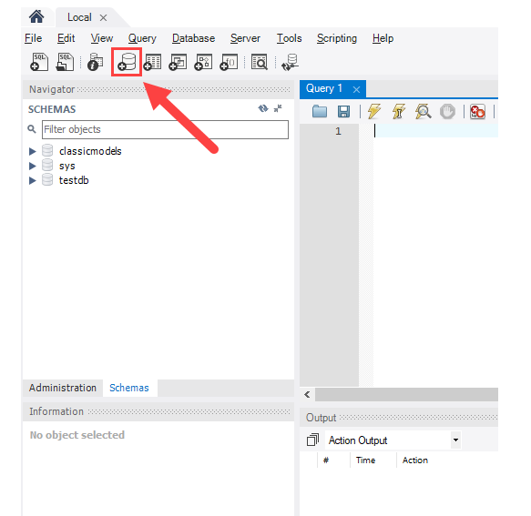

Objectives
This lab will put into practice the table mapping process, as well as the create table and insert into statements.
Relational Database Concepts
Examine the sample data for these tables in the DJs on Demand database. Check for entity, referential, and column integrity. Identify any data-integrity violations. Assume that all date columns should have date format and all amount (cost) columns should have a number format.

Basic Mapping
Transform the following entities into table definitions, using suitable naming conventions:

Remember we are creating definitions of tables, the physical implementation will be done later. What foreign key relationship do you think exists?
Match the ERD elements to their corresponding database elements.

Identify what is wrong with the following table names:
level8_class_2018_relational_databases
level8 class list
Relationship mapping
Transform relationships as foreign key columns
For the following ERD create table mappings for shift, shift assignment, order, order line, frequent diner card, and food item. Ignore all other entities for the moment.

In your table mapping identify the table name, column name, data type, primary key, foreign key, and any other constraints you think are appropriate.
Super and Subtype mapping
Transform the STAFF supertype in the following example, using the subtype or two table implementation.

Make sure you have a foreign key in each staff type to represent the recursive relationship between manager and staff.
Creating a database
To create a new database for this lab, launch MySQL Workbench and click the setup new connection button.
Next type in the name of the connection, (this can be anything), click the Test Connection button
MySQL Workbench displays a dialog asking for the password of the root user:
You need to type a password for the root user (choose something you will remember) and then check the save password in vault and click OK.
Next double click on your new connection to connect to the MySQL Server.
MySQL Workbench opens the following window which consists of four parts: Navigator, Query, Information, and Output

Next click the create a new schema in the connected server button from the toolbar:

In MySQL the schema is the name given to a database. Creating a schema also means creating a new database.
Name the database/schema and use the default charset and collation.
Next MySQL Workbench opens the following window that displays the SQL script which will be executed.
If everything is fine, you will see the new database created and showed in the schemas tab of the Navigator section.
The testdb2 now is open as shown below:
Now you can work with testdb2.
CREATE TABLE
It is a useful exercise now to add to the table mappings you completed in step 2. In order to create a table we also need to know the datatype and the size of the column.
For this reason we show our table mapping information as below:
Complete the GRADUATE table mapping chart.
Next on paper, write the syntax to create the graduates table.
CREATE TABLE [IF NOT EXISTS] table_name (
column_list
) ENGINE=storage_engine;You should have an SQL CREATE TABLE statement you can enter into the query window in WorkBench.
CREATE TABLE graduates
( student_id INT(6),
last_name VARCHAR(15),
first_name VARCHAR(15),
credits INT(3) DEFAULT 0,
graduation_date DATE
);Click the Run (lightening strike icon) button and you should receive a message in the results area to say Table created. 0.03 seconds
You should also see the table name appear under the schema testdb2.
You can also use the following statement to ask the database to describe the table you just created:
describe graduates;In order to run just one statement in the commands box without the other statements running you must highlight the statement you wish to run and click run. Otherwise clicking run will execute all SQL contained in the query window.
You should save your SQL statements by choosing Save Script in the File menu. This is very important for your CA as the SQL you write is part of the deliverable you hand up.
Practice
From step 2 you should have table mappings for shift, shift assignment, order, order line, frequent diner card, and food item. Add to these mappings so that you now have the appropriate data type and size for each column.
- Write a CREATE TABLE statement for each table.
- Run each statement and check the table exists by looking for it in the schema and information section of the WorkBench window.
INSERT into a table
The INSERT statement allows you to insert one or more rows into a table.
Here is the syntax of the INSERT statement:
INSERT INTO table_name(col1,col2,...)
VALUES (val1,val2,...);In this syntax, - first you specify the table name and a list of comma-separated columns inside parenthesis after the INSERT INTO clause. - then you put a comma-separated list of values of the corresponding columns inside the parenthesis following the VALUES clause.
- The number of columns and values must be the same. In addition the position of columns must be corresponding with the positions of their values.
To add multiple rows into a table using a single INSERT statement, you use the following syntax:
INSERT INTO table_name(col1,col2,...)
VALUES
(val1,val2,...),
(val1,val2,...),
...
(valn,valn,...);INSERT INTO the GRADUATES table
Write the INSERT INTO statement necessary to insert the following data for the GRADUATES table.
200062134 Sebastian Evans 60 '2018-10-12'
Try writing another INSERT statement to put another graduate record into the table, this time rely on the default date.
Practice more insert statements for the tables you created in step 5 (shift, shift_assignment, order, order_line, frequent_diner_card, and food_items).
Make sure you save all of your SQL statement in a .sql file using the File->Save Script